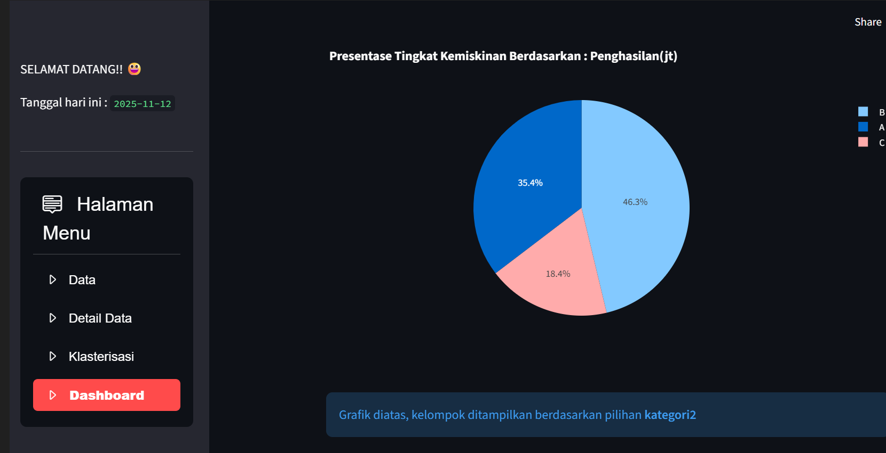

<div class="w-75 h-45 group relative overflow-hidden box-border shadow-xl/15 
    border-4 border-indigo-200 rounded-lg hover:bg-black">

    

    <div class="absolute inset-0 flex z-9 flex-col justify-center items-center opacity-0 group-hover:opacity-100
                px-[10%] font-serif font-semibold text-base text-white text-centern transition duration-300">
        <p data-key="webproject.webcontent2">Big Data Clustering Application with K-Means Algorithm - Final Project Exam
        </p>

        <a  href="https://vrwmg64otw5g2evnafxxsz.streamlit.app/" target="_blank" rel="noopener noreferrer"
            class="mt-[5%] py-[3%] px-[5%] border border-white text-white rounded hover:bg-white hover:text-indigo-800 hover:translate-x-1 transition
            active:scale-95 transition duration-150 ease-in-out hover:shadow-md focus:outline-none" data-key="webproject.webbut2">
            Go to Website →
        </a>
    </div>
</div>

<div class="flex flex-row justify-center gap-[2%]">
    <p class="font-bold font-serif text-base" data-key="webproject.webtools2">Using:</p>
    <p class="text-base">Python, Streamlit</p>
</div>